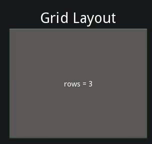
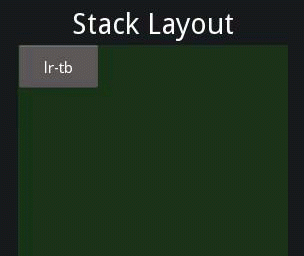
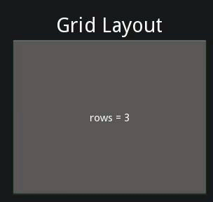
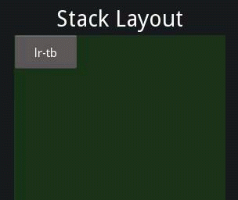
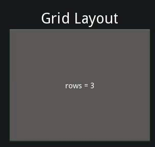
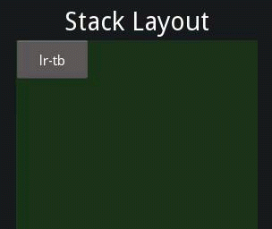
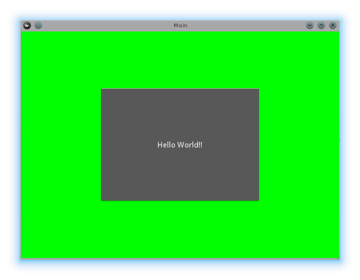
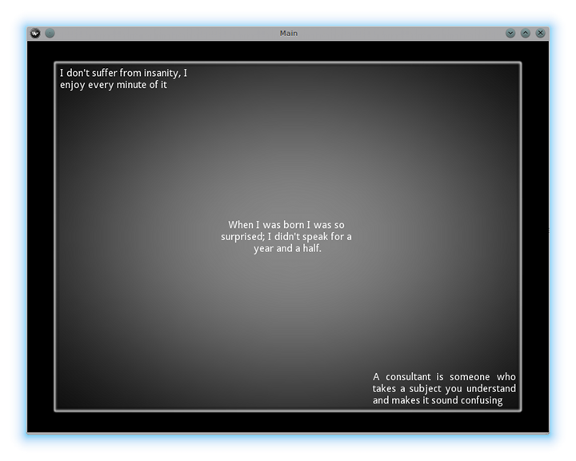

 
  

Title: Kivy Widgets Date: 2017-02-26 Category: Kivy Tags: Python,Kivy
控件Widget是 Kivy 图形界面中的基本元素。控件提供了一个画布Canvas，这是用来在屏幕上进行绘制的。控件接收事件，并且对事件作出反应。想要对 控件Widget进行更深入的了解，可以去看看这个模块的文档。
Kivy 以树的形式来组织控件。你的应用程序会有一个根控件，通常会含有若干的子控件 children，这些子控件还可以有自己的子控件。一个控件的子控件会以 children属性的形式表述，这个属性是 Kivy 中的一个列表属性 ListProperty
可以用一下方法来操作控件树：
add_widget(): 添加一个控件作为子控件；remove_widget(): 从子控件列表中去掉一个控件；clear_widgets(): 清空一个控件的所有子控件。例如下面的代码，就是在一个盒式布局 BoxLayout 中添加一个按钮：
Python
layout = BoxLayout(padding=10)
button = Button(text='My first button')
layout.add_widget(button)
这个按钮就添加到布局当中去了：按钮的 parent 属性会被设置为这个布局；这个按钮也会被添加到布局中的子控件列表。要把这个按钮从这个布局中删掉也很简单：
Python
layout.remove_widget(button)
移除了之后，这个按钮的 parent 属性就会被设置为 None，也会被从布局的子控件列表中移除。
要是想清空一个控件中的所有自科技，那就用 clear_widgets()方法就可以了：
Python
layout.clear_widgets()
千万别自己手动去操作子控件列表，除非你确定自己掌控得非常深入透彻。因为控件树是和绘图树联系在一起的。例如，如果你添加了一个控件到子控件列表，但没有添加这个新子控件的画布到绘图树上，那么就会出现这种情况：这个控件确实成了一个子控件，但是屏幕上不会显示出来。此外，如果你后续使用添加、移除、清空控件这些操作，可能还会遇到问题。
控件类实例的子控件children列表属性中包含了所有的子控件。所以可以用如下的方式来进行遍历：
```Python root = BoxLayout()
for child in root.children: print(child) ```
然而，这样的操作可得谨慎使用。如果你要用之前一节中提到的方法来修改这个子控件列表电话，请一定用下面这种方法来做一下备份：
Python
for child in root.children[:]:
# manipulate the tree. For example here, remove all widgets that have a
# width
if child.width 100:
root.remove_widget(child)
默认情况下，控件是不会对子控件的尺寸/位置进行改变的。位置属性 pos是屏幕坐标系上的绝对值（除非你使用相对布局relativelayout，这个以后再说），而尺寸属性 size就是一个绝对的尺寸大小。
控件绘制的顺序，是基于各个控件在控件树中的位置。添加控件方法 add_widget 可以接收一个索引参数，这样就能指定该新增控件在控件树中的位置。
Python
root.add_widget(widget, index)
索引值小的控件会被绘制在索引值大的控件之上。一定要记住，默认值是 0 ，所以后添加的控件总会在所有控件的最顶层，除非指定了索引值。
布局 layout是一种特别的控件，它会控制自己子控件的尺寸和位置。有各种不同的布局，这些布局分别为子控件提供拜托你个的自动组织整理。这些布局使用尺寸推测 size_hint和位置推测 pos_hint这两个属性来决定子控件children的尺寸 size 和 位置pos。
盒式布局 BoxLayout: 所有控件充满整个空间，以互相挨着的方块的方式来分布，横着或者竖着排列都可以。子控件的 size_hint 属性可以用来改变每个子控件的比例，也可以设置为固定尺寸。
 
网格布局 GridLayout: 以一张网格的方式来安排控件。你必须指定好网格的维度，确定好分成多少格，这样 Kivy 才能计算出每个元素的尺寸并且确定如何安排这些元素的位置。
栈状布局 StackLayout: 挨着放一个个控件，彼此邻近，在某一个维度上有固定大小，而使它们填充整个空间。 这适合用来显示相同预定义大小的子控件。
锚式布局 AnchorLayout: 一种非常简单的布局，只关注子控件的位置。 将子控件放在布局的边界位置。 不支持size_hint。
浮动布局 FloatLayout: 允许放置具任意位置和尺寸的子控件，可以是绝对尺寸，也可以是相对布局的相对尺寸。 默认的 size_hint（1，1）会让每个子控件都与整个布局一样大，所以如果你多个子控件就要修改这个值。可以把 sizehint 设置成 (None, None)，这样就可以使用 size 这个绝对尺寸属性。控件也支持 poshint，这个属性是一个 dict 词典，用来设置相对布局的位置。
相对布局 RelativeLayout: 和浮动布局 FloatLayout 差不多，不同之处在于子控件的位置是相对于布局空间的，而不是相对于屏幕。
想要深入理解各种布局的话，可以仔细阅读各种文档。
size_hint 是一个 引用列表属性 ReferenceListProperty ，包括 size_hint_x 和size_hint_y 两个变量。接收的变量值是从0到1的各种数值，或者 None， 默认值为 (1, 1)。这表示如果控件处在布局之内，布局将会在两个方向分配全部尺寸（相对于布局大小）给该控件。
举个例子，设置size_hint 为 (0.5, 0.8)，就会给该控件Widget 分配布局 layout 内50% 宽，80% 高的尺寸。
例如下面这个例子：
Python
BoxLayout:
Button:
text: 'Button 1'
# default size_hint is 1, 1, we don't need to specify it explicitly
# however it's provided here to make things clear
size_hint: 1, 1
加载 Kivy 目录：
Python
cd $KIVYDIR/examples/demo/kivycatalog
python main.py
把上面代码中的 $KIVYDIR 替换成你的 Kivy 安装位置。在左边点击标注有 Box Layout 的按钮。 然后将上面的代码粘贴到窗口右侧的编辑器内。
![../_images/size_hint[B].jpg](./08-Kivy-Widgets_files/size_hint[B].jpg)
然后你就可以看到上图这样的界面了，这个按钮 Button 会占据整个布局尺寸 size的 100%。
修改size_hint_x/size_hint_y 为 .5 这就会把控件 Widget 调整为布局 layout 的50% 宽度 width/高度 height。
![../_images/size_hint[b_].jpg](./08-Kivy-Widgets_files/size_hint[b_].jpg)
这时候效果如上图所示，虽然我们已经同时指定了 size_hint_x 和 size_hint_y 为 .5，但似乎只有对 size_hint_x 的修改起作用了。这是因为在盒式布局 boxlayout中，当orientation被设置为竖直方向（vertical） 的时候，size_hint_y 由布局来控制，而如果orientation 被设置为水平方向（horizontal）的时候， size_hint_x 由布局来控制，所以这些情况手动设定就无效了。 这些受控维度的尺寸，是根据子控件 children 在 盒式布局 boxlayout中的总编号来计算的。在上面的例子中，这个子控件的size_hint_y 是受控的(.5/.5 = 1)。所以，这里控件就占据了上层布局的整个高度。
接下来咱们再添加一个按钮 Button到这个 布局 layout看看有什么效果。
![../_images/size_hint[bb].jpg](./08-Kivy-Widgets_files/size_hint[bb].jpg)
盒式布局 boxlayout 默认对其所有的子控件 children分配了等大的空间。在咱们这个例子里面，比例是50-50，因为有两个子控件 children。那么接下来咱们就对其中的一个子控件设置一下 size_hint，然后看看效果怎么样。
![../_images/size_hint[oB].jpg](./08-Kivy-Widgets_files/size_hint[oB].jpg)
从上图可以看出，如果一个子控件有了一个指定的 size_hint，这就会决定该控件 Widget使用盒式布局 boxlayout提供的空间中的多大比例，来作为自己的尺寸 size 。在我们这个例子中，第一个按钮 Button 的size_hint_x设置为了 .5。那么这个控件分配到的空间计算方法如下：
```Python first child's sizehint divided by first child's sizehint + second child's size_hint + ...n(no of children)
.5/(.5+1) = .333... ```
盒式布局 BoxLayout 的剩余宽度 width会分配给另外的一个子控件 children。在我们这个例子中，这就意味着第二个按钮 Button 会占据整个布局 layout的 66.66% 宽度 width 。
修改 size_hint 探索一下来多适应一下吧。
如果你想要控制一个控件 Widget的绝对尺寸 size ，可以把size_hint_x/size_hint_y当中的一个或者两个都设置成 None，这样的话该控件的宽度 width 和高度 height的属性值就会生效了。
pos_hint 是一个词典 dict，默认值是空。相比于size_hint，布局对pos_hint的处理方式有些不同，不过大体上你还是可以对pos 的各种属性设定某个值来设定控件 Widget在父控件 parent中的相对位置（可以设定的属性包括：x, y, right, top, center_x, center_y）。
咱们用下面 kivycatalog 中的代码来可视化地理解一下pos_hint：
```Python FloatLayout: Button: text: "We Will" pos: 100, 100 sizehint: .2, .4 Button: text: "Wee Wiill" pos: 200, 200 sizehint: .4, .2
Button:
text: "ROCK YOU!!"
pos_hint: {'x': .3, 'y': .6}
size_hint: .5, .2
```
这份代码的输出效果如下图所示：

说了半天size_hint，你不妨自己试试探索一下 pos_hint，来理解一下这个属性对控件位置的效果。
关于布局，有一个问题经常被问道：
“怎么给一个布局添加背景图片/颜色/视频/等等......”
本来默认的各种布局都是没有视觉呈现的：因为布局不像控件，布局是默认不含有绘图指令的。不过呢，还是你可以给一个布局实例添上绘图指令，也就可以添加一个彩色背景了：
在 Python 中的实现方法：
```Python from kivy.graphics import Color, Rectangle
with layoutinstance.canvas.before: Color(0, 1, 0, 1) # green; colors range from 0-1 instead of 0-255 self.rect = Rectangle(size=layoutinstance.size, pos=layout_instance.pos) ```
然而很不幸，这样只能在布局的初始化位置以布局的初始尺寸绘制一个矩形。所以还要对布局的尺寸和位置变化进行监听，然后对矩形的尺寸位置进行更新，这样才能保证这个矩形一直绘制在布局的内部。可以用如下方式实现：
```Python with layoutinstance.canvas.before: Color(0, 1, 0, 1) # green; colors range from 0-1 instead of 0-255 self.rect = Rectangle(size=layoutinstance.size, pos=layout_instance.pos)
def update_rect(instance, value): instance.rect.pos = instance.pos instance.rect.size = instance.size
layoutinstance.bind(pos=updaterect, size=update_rect) ```
在 kv 文件中：
Python
FloatLayout:
canvas.before:
Color:
rgba: 0, 1, 0, 1
Rectangle:
# self here refers to the widget i.e BoxLayout
pos: self.pos
size: self.size
上面的 Kv 文件中的生命，就建立了一个隐含的绑定：上面 Kv 代码中的最后两行保证了矩形的位置 pos和尺寸 size会在浮动布局 floatlayout的位置 pos发生变化的时候进行更新。
接下来咱们把上面的代码片段放进 Kivy 应用里面。
纯 Python 方法：
```Python from kivy.app import App from kivy.graphics import Color, Rectangle from kivy.uix.floatlayout import FloatLayout from kivy.uix.button import Button
class RootWidget(FloatLayout):
def __init__(self, **kwargs):
# make sure we aren't overriding any important functionality
super(RootWidget, self).__init__(**kwargs)
# let's add a Widget to this layout
self.add_widget(
Button(
text="Hello World",
size_hint=(.5, .5),
pos_hint={'center_x': .5, 'center_y': .5}))
class MainApp(App):
def build(self):
self.root = root = RootWidget()
root.bind(size=self._update_rect, pos=self._update_rect)
with root.canvas.before:
Color(0, 1, 0, 1) # green; colors range from 0-1 not 0-255
self.rect = Rectangle(size=root.size, pos=root.pos)
return root
def _update_rect(self, instance, value):
self.rect.pos = instance.pos
self.rect.size = instance.size
if name == 'main': MainApp().run() ```
使用 Kv 语言：
```Python from kivy.app import App from kivy.lang import Builder
root = Builder.loadstring(''' FloatLayout: canvas.before: Color: rgba: 0, 1, 0, 1 Rectangle: # self here refers to the widget i.e FloatLayout pos: self.pos size: self.size Button: text: 'Hello World!!' sizehint: .5, .5 pos_hint: {'centerx':.5, 'centery': .5} ''')
class MainApp(App):
def build(self):
return root
if name == 'main': MainApp().run() ```
上面这两个应用的效果都如下图所示： 
上面那一段中咱们对布局实例增加背景的方法，如果用到很多歌布局里面，那就很快变得特别麻烦了。要解决这种需求，就可以基于布局类 Layout 创建一个自定义的布局子类，给自定义的这个类增加一个背景。
使用 Python：
```Python from kivy.app import App from kivy.graphics import Color, Rectangle from kivy.uix.boxlayout import BoxLayout from kivy.uix.floatlayout import FloatLayout from kivy.uix.image import AsyncImage
class RootWidget(BoxLayout): pass
class CustomLayout(FloatLayout):
def __init__(self, **kwargs):
# make sure we aren't overriding any important functionality
super(CustomLayout, self).__init__(**kwargs)
with self.canvas.before:
Color(0, 1, 0, 1) # green; colors range from 0-1 instead of 0-255
self.rect = Rectangle(size=self.size, pos=self.pos)
self.bind(size=self._update_rect, pos=self._update_rect)
def _update_rect(self, instance, value):
self.rect.pos = instance.pos
self.rect.size = instance.size
class MainApp(App):
def build(self):
root = RootWidget()
c = CustomLayout()
root.add_widget(c)
c.add_widget(
AsyncImage(
source="http://www.everythingzoomer.com/wp-content/uploads/2013/01/Monday-joke-289x277.jpg",
size_hint= (1, .5),
pos_hint={'center_x':.5, 'center_y':.5}))
root.add_widget(AsyncImage(source='http://www.stuffistumbledupon.com/wp-content/uploads/2012/05/Have-you-seen-this-dog-because-its-awesome-meme-puppy-doggy.jpg'))
c = CustomLayout()
c.add_widget(
AsyncImage(
source="http://www.stuffistumbledupon.com/wp-content/uploads/2012/04/Get-a-Girlfriend-Meme-empty-wallet.jpg",
size_hint= (1, .5),
pos_hint={'center_x':.5, 'center_y':.5}))
root.add_widget(c)
return root
if name == 'main': MainApp().run() ```
使用 Kv 语言：
```Python from kivy.app import App from kivy.uix.floatlayout import FloatLayout from kivy.uix.boxlayout import BoxLayout from kivy.lang import Builder
Builder.load_string('''
class RootWidget(BoxLayout): pass
class CustomLayout(FloatLayout): pass
class MainApp(App):
def build(self):
return RootWidget()
if name == 'main': MainApp().run() ```
上面这两个应用的效果都如下图所示：

在自定义布局类中定义了背景之后，就是要确保在自定义布局的各个实例中使用到这个新特性。
首先，要在全局上增加一个图形或者颜色给内置的 Kivy 布局的背景，这就需要将所用布局的默认 Kv 规则进行覆盖。
就拿网格布局 GridLayout 举例吧：
Python
<GridLayout>
canvas.before:
Color:
rgba: 0, 1, 0, 1
BorderImage:
source: '../examples/widgets/sequenced_images/data/images/button_white.png'
pos: self.pos
size: self.size
接下来把这段代码放到一个 Kivy 应用里面：
```Python from kivy.app import App from kivy.uix.floatlayout import FloatLayout from kivy.lang import Builder
Builder.loadstring('''
class RootWidget(FloatLayout): pass
class MainApp(App):
def build(self):
return RootWidget()
if name == 'main': MainApp().run() ```
效果大概如下图所示：

我们已经对网格布局 GridLayout 类的规则进行了覆盖，所以接下来在应用中使用这个类就都会显示那幅图片了。
动画背景怎么弄呢？
就像在矩形Rectangle/ 边界图像BorderImage /椭圆Ellipse/等里面添加设置绘图指令一样，可以用一个特定的纹理属性 texture ：
Python
Rectangle:
texture: reference to a texture
可以用下面的代码实现一个动画背景：
```Python from kivy.app import App from kivy.uix.floatlayout import FloatLayout from kivy.uix.gridlayout import GridLayout from kivy.uix.image import Image from kivy.properties import ObjectProperty from kivy.lang import Builder
Builder.loadstring('''
class CustomLayout(GridLayout):
background_image = ObjectProperty(
Image(
source='../examples/widgets/sequenced_images/data/images/button_white_animated.zip',
anim_delay=.1))
class RootWidget(FloatLayout): pass
class MainApp(App):
def build(self):
return RootWidget()
if name == 'main': MainApp().run() ```
要理解这里到底发生了什么，得从第 13 行开始看：
Python
texture: self.background_image.texture
这里是指定让边界图像 BorderImage 的纹理属性在背景图像 backgroundimage 的纹理属性发生更新的时候进行同步更新。背景图像 backgroundimage 属性的定义是在第 40 行：
Python
background_image = ObjectProperty(...
这一句代码是将背景图像 backgroundimage 设置成一个对象属性 ObjectProperty，这样就可以在其中添加一个图形控件 Image。图像控件有一个纹理属性（texture property）；在前面的 self.backgroundimage.texture 这句代码中，就是建立了一个名为 texture 的到这个属性的引用。图形控件 Image 支持动画（animation）：随着动画的改变，图像的纹理会同步更新，在这个过程中，边界图像 BorderImage 指令的 texture 纹理属性也会同步更新。
（译者注：texture of BorderImage instruction，这里我对 instruction 的翻译应该是不太对的，不过我还没理清楚该怎么表述。）
也可以直接传递自定义数据到纹理属性 texture。更多细节可以参考纹理 Texture 的文档。
嗯，看看这个过程如何扩展是很有趣的。
Kivy 的默认长度单位是像素 pixel，所有的尺寸和位置都用这个单位来表达。你也可以用其他单位来衡量，在跨平台多种设备的时候，这有助于实现更好的连续性体验（这些设备会把尺寸自动转换到像素）。
可用单位包括 pt， mm，cm, inch， dp and sp。可以在度量文档 metrics 中了解更多相关内容。
你还可以探索一下屏幕模块 screen的用法，这个可以模拟出不同设备的屏幕，供测试应用。
如果你的应用程序要包含多个程序，那可能就需要从一个屏幕 Screen到另一个屏幕 Screen提供一个导航的通道。幸运的是，正好有一个屏幕管理器类ScreenManager，这个类允许你来定义分开的各个屏幕，设置屏幕管理器的TransitionBase就可以实现从一个屏幕到另一个屏幕的跳转导航。